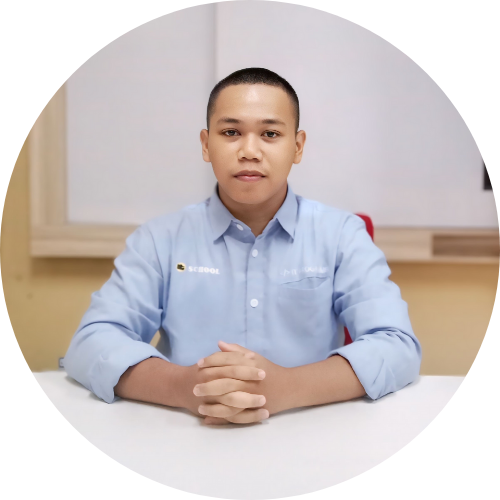

Mukhamad Viko Ramayudha
Hi! Saya seorang web developer. Saya memiliki banyak keahlian di berbagai bidang. Keahlian utama saya sebagian besar terkait dengan sektor digital, seperti programming, design, video editing, & lainnya.
Pendidikan
- SD Negeri Ketegan | 2012 - 2018
- SMP Negeri 1 Winongan | 2018 - 2021
- SMK Negeri 1 Pasuruan | 2021 - 2024
Pengalaman
- PT. Universal Big Data
- Membuat Web Aplikasi CRUD data siswa dan perpustakaan.
- Menduplikasi situs web menggunakan WordPress
- Mengumpulkan data contact dari ratusan situs di dunia, membroadcast pesan/promosi ke berbagai channel (WhatsApp, Telegram, Email, Instagram, Shopee, dan Tokopedia) menggunakan AI chatbot.
- Menyatukan komunikasi dari berbagai saluran, dan me-manage CRM yang dibantu AI chatbot untuk melayani pelanggan.
- Membantu memperkenalkan dan meningkatkan penjualan produk atau jasa.
- Menjamin kualitas standar pelayanan yang diberikan.
- Membuat strategi, menarget projects, dan menyelesaikan sesuai jadwal.
Bahasa Pemrograman Yang Dikuasai